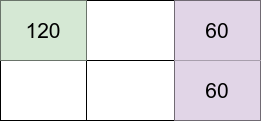

| Category | Difficulty | Likes | Dislikes |
|---|---|---|---|
| Algorithms | Hard | 340 | 55 |
dynamic-programming | bit-manipulation | memoization | bitmask
salesforce
You are given four integers, m, n, introvertsCount, and extrovertsCount. You have an m x n grid, and there are two types of people: introverts and extroverts. There are introvertsCount introverts and extrovertsCount extroverts.
You should decide how many people you want to live in the grid and assign each of them one grid cell. Note that you do not have to have all the people living in the grid.
The happiness of each person is calculated as follows:
120 happiness and lose 30 happiness for each neighbor (introvert or extrovert).40 happiness and gain 20 happiness for each neighbor (introvert or extrovert).Neighbors live in the directly adjacent cells north, east, south, and west of a person's cell.
The grid happiness is the sum of each person's happiness. Return the maximum possible grid happiness.
Example 1:

Input: m = 2, n = 3, introvertsCount = 1, extrovertsCount = 2
Output: 240
Explanation: Assume the grid is 1-indexed with coordinates (row, column).
We can put the introvert in cell (1,1) and put the extroverts in cells (1,3) and (2,3).
- Introvert at (1,1) happiness: 120 (starting happiness) - (0 * 30) (0 neighbors) = 120
- Extrovert at (1,3) happiness: 40 (starting happiness) + (1 * 20) (1 neighbor) = 60
- Extrovert at (2,3) happiness: 40 (starting happiness) + (1 * 20) (1 neighbor) = 60
The grid happiness is 120 + 60 + 60 = 240.
The above figure shows the grid in this example with each person's happiness. The introvert stays in the light green cell while the extroverts live on the light purple cells.Example 2:
Input: m = 3, n = 1, introvertsCount = 2, extrovertsCount = 1
Output: 260
Explanation: Place the two introverts in (1,1) and (3,1) and the extrovert at (2,1).
- Introvert at (1,1) happiness: 120 (starting happiness) - (1 * 30) (1 neighbor) = 90
- Extrovert at (2,1) happiness: 40 (starting happiness) + (2 * 20) (2 neighbors) = 80
- Introvert at (3,1) happiness: 120 (starting happiness) - (1 * 30) (1 neighbor) = 90
The grid happiness is 90 + 80 + 90 = 260.Example 3:
Input: m = 2, n = 2, introvertsCount = 4, extrovertsCount = 0
Output: 240
Constraints:
1 <= m, n <= 50 <= introvertsCount, extrovertsCount <= min(m * n, 6)